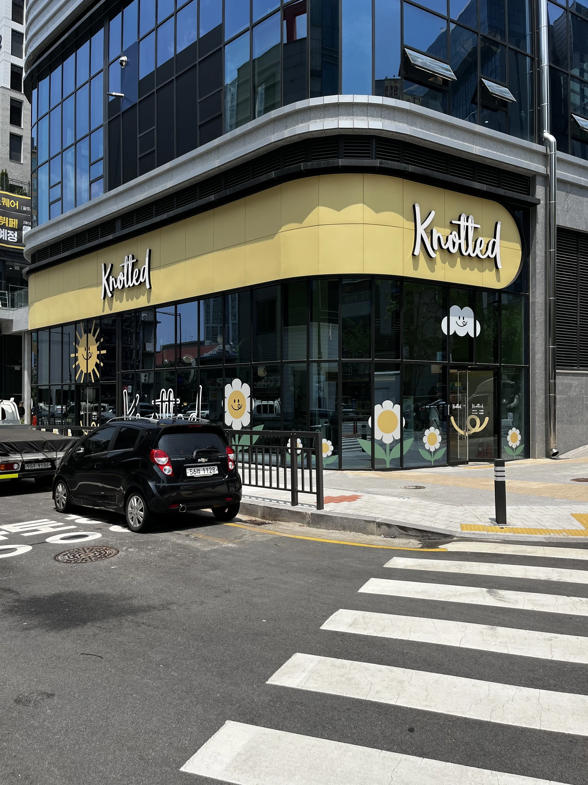
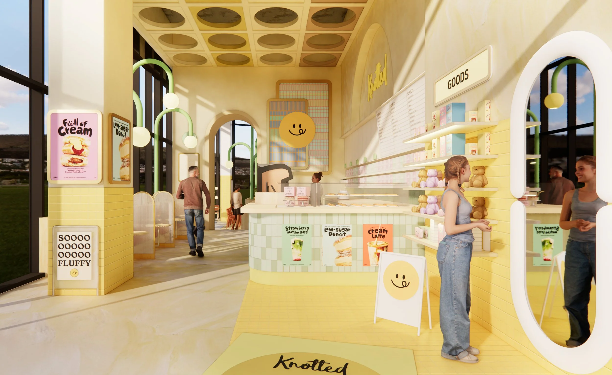
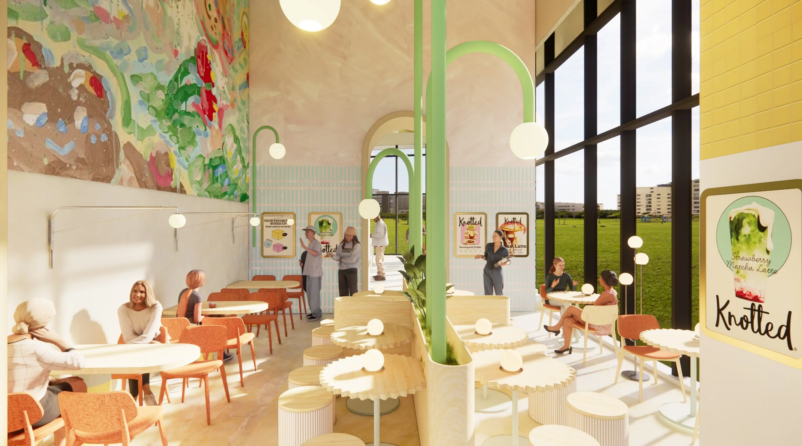
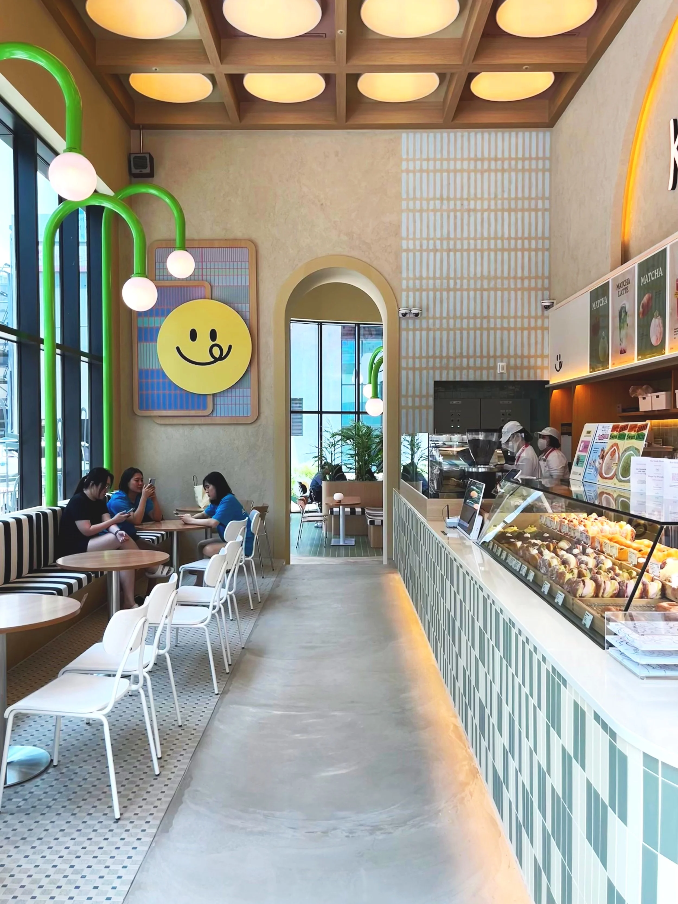
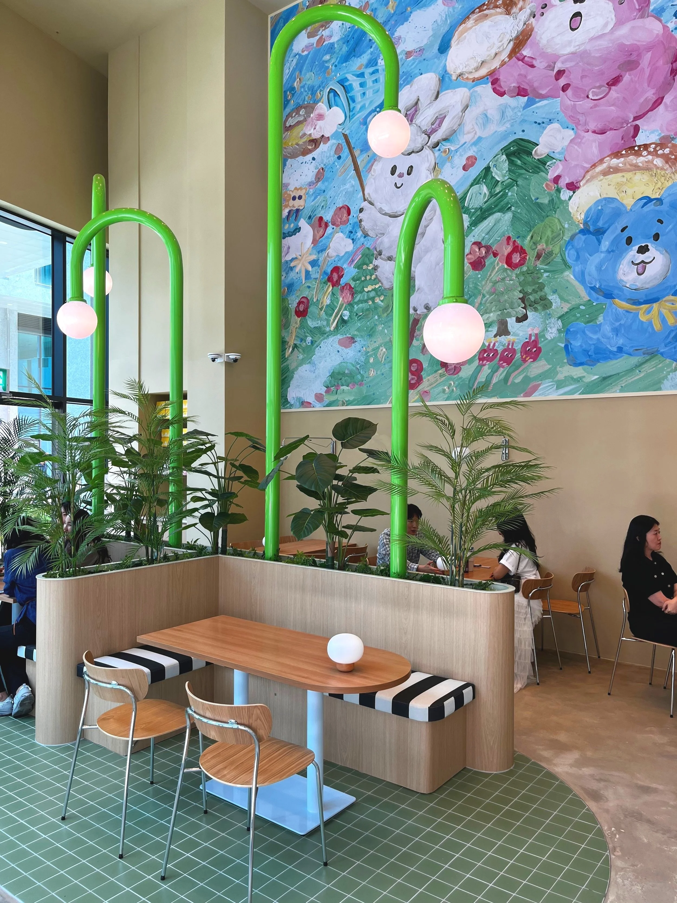
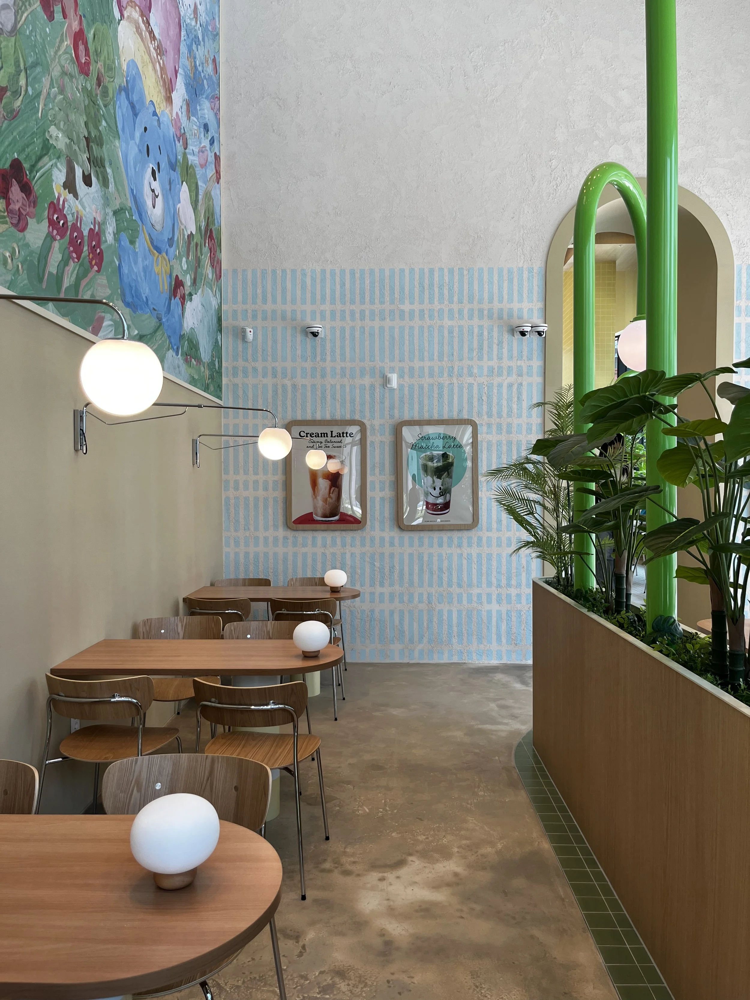
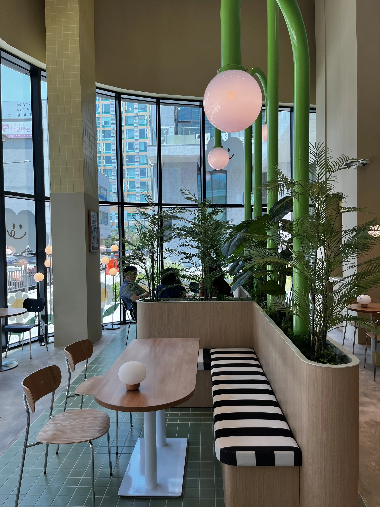
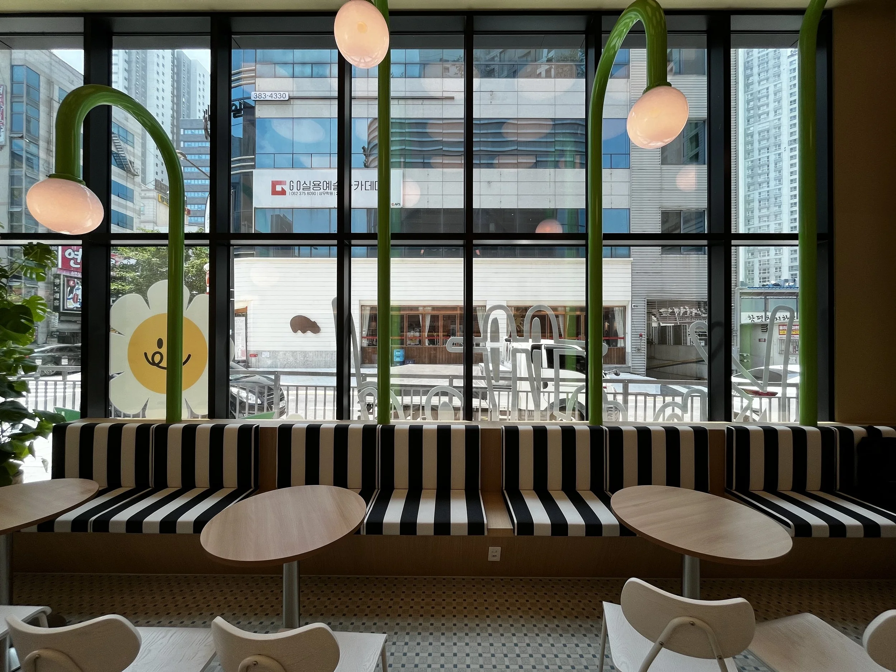

Knotted Gwangju Sangmu
A playful garden, not a copy of the Seoul stores.서울 매장의 복사본이 아닌, 하나의 장난스러운 정원.




- Client
- GFFG
- Location
- Gwangju, Korea
- Year
- 2024
- Role
- Creative Director
- Scope
- Creative direction, spatial storytelling, VMD, artist commission
Every expanding brand faces the same question: how much of the original do you keep? I held the tone — soft, inviting, generous — and let the materials feel local.
Experimental tiles, custom lighting, and a commissioned mural by the artist Isulro.
확장하는 모든 브랜드가 만나는 질문 — 원본을 얼마나 유지할 것인가. 톤은 지키고 재료는 새롭게 했습니다.
실험적인 타일 선정, 커스텀 조명 구조물, 그리고 이슬로 작가의 벽화.




Consistency of tone, freshness of material.톤은 일관되게, 재료는 새롭게.